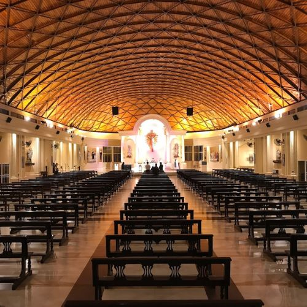
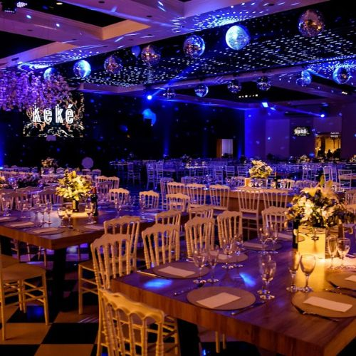
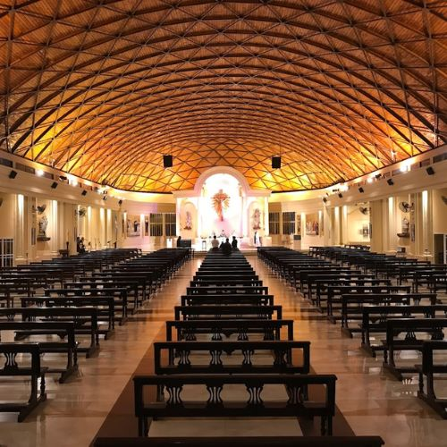
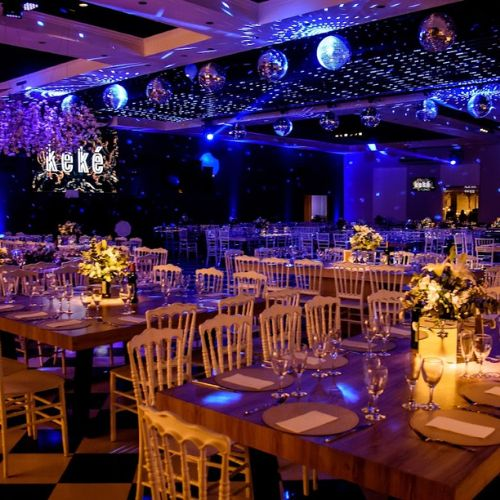

Dirección
Parroquia San Juan Bosco
Av. Mitre 312, San Miguel de Tucumán.
Keké Salón de Fiestas
Diagonal Lechesse km 3.5 Camino 14, Tafí Viejo, Tucumán.
Av. Mitre 312, San Miguel de Tucumán.
Diagonal Lechesse km 3.5 Camino 14, Tafí Viejo, Tucumán.
